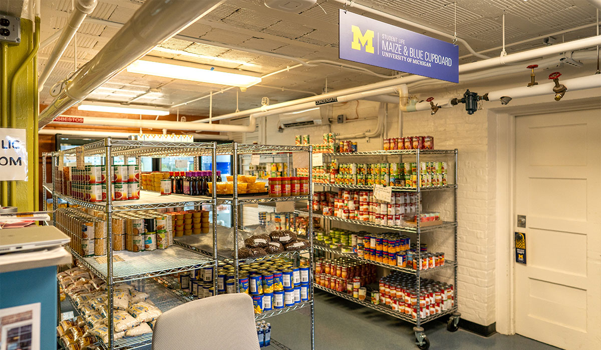

About Maize & Blue Cupboard
Overview
College students and staff are experiencing food insecurity at alarming rates. The Maize and Blue Cupboard is here to provide an immediate and comprehensive response for the U-M community. By offering resources, educational opportunities, compassionate support and more, students develop the skills to make informed decisions.
Mission
To ensure members of the University of Michigan community-whether on a tight budget or physically restrained from getting to a grocery store-receive equitable access to healthy, nutritious, and nourishing food and the ability to prepare it for themselves or others.
Services
Maize & Blue Cupboard provides:
- Food: Plentiful items of food and produce for you to choose from.
- Kitchen & Cooking: A kitchen with the tools and devices you need to cook.
- Personal & Household: Items for your personal and household needs.
- Support: Resources and the support you need to overcome current or future challenges.
Visit Maize & Blue Cupboard
Location
Located in the basement of the Betsy Barbour Residence Hall, enter using the Maynard entrance to ensure privacy for residents.
Address: 420 S State St Ann Arbor, MI 48109
Phone: 734-936-2794
Hours
From Monday, 10/30/2024, Maize & Blue Cupboard will transition to appointment-based shopping.
Schedule a shopping appointment for in-person visits.
More Information
For more information, visit the Maize & Blue website to learn more!